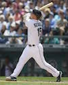

2014 Seattle Mariners Statistical Leaderboard
|
PA |
OBP |
wOBA |
wRC+ |
WAR |
| Kyle Seager |
654 |
.334 |
.346 |
126 |
5.5 |
| Robinson Cano |
665 |
.382 |
.361 |
136 |
5.2 |
| Dustin Ackley |
542 |
.293 |
.305 |
97 |
2.1 |
| Michael Saunders |
263 |
.341 |
.346 |
126 |
1.9 |
| Mike Zunino |
476 |
.254 |
.290 |
86 |
1.7 |
| Footer1 |
Footer2 |
- wOBA
- Weighted On-Base Average combines all the different aspects of hitting into one metric, weighting each of them in proportion to their actual run value. While batting average, on-base percentage, and slugging percentage fall short in accuracy and scope, wOBA measures and captures offensive value more accurately and comprehensively.(source: fangraphs)
- wRC+
- Weighted Runs Created (wRC) is an improved version of Bill James’ Runs Created (RC) statistic, which attempted to quantify a player’s total offensive value and measure it by runs. In Runs Created, instead of looking at a player’s line and listing out all the details (e.g. 23 2B, 15 HR, 55 BB, 110 K, 19 SB, 5 CS), the information is synthesized into one metric in order to say, “Player X was worth 24 runs to his team last year.”(source: fangraphs)
- WAR
- Wins Above Replacement (WAR) is an attempt by the sabermetric baseball community to summarize a player’s total contributions to their team in one statistic. (source: fangraphs)
Blue Rectangle in a Pink Rectangle.

This is a whole bunch of text to display as a paragraph. The image should stay aligned to the left and allow the text to wrap around it and continue to the bottom. That is the purpose of this paragraph full of pointless text that you shouldn't even be reading. If you have gotten this far, there is not need to keep reading as the content of this paragraph has no value.
This is a whole bunch of text to display as a paragraph. The image should stay aligned to the left and allow the text to wrap around it and continue to the bottom. That is the purpose of this paragraph full of pointless text that you shouldn't even be reading. If you have gotten this far, there is not need to keep reading as the content of this paragraph has no value.